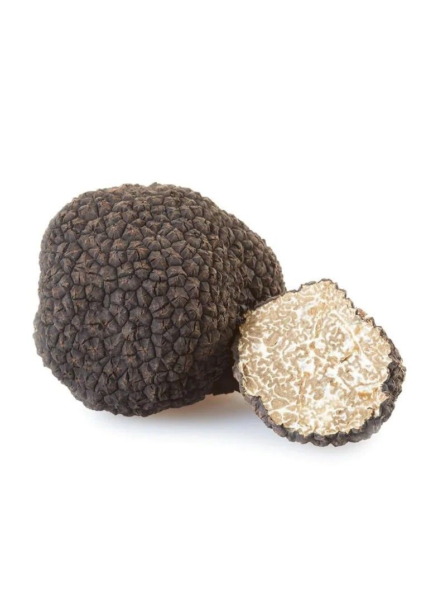

5 datos curiosos sobre el aceite de oliva
Desde su origen milenario hasta cómo distinguir uno de calidad extra virgen.
Ver caso
Desde su origen milenario hasta cómo distinguir uno de calidad extra virgen.
Ver caso
Por qué este ingrediente es tan valorado y cómo se usa en platos gourmet.
Ver caso